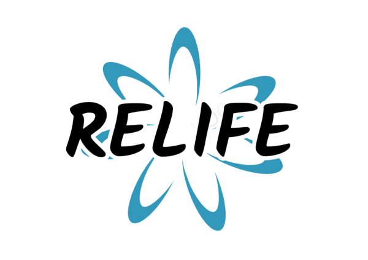

Educate Yourself
Help Yourself
Help Others
Spread the Word
Ask ReLife
Take a Test
Max Luscher color Test
1. Please enter your gender :
Choose here
Male
Female
Prefer Not To Say
2. Click on the color you like best.
Summary of results :
Choice of colors :
Neuropsychological tension (Total deviation) :
Coefficient of psycho-vegetative activity :
Click on the color you like best.